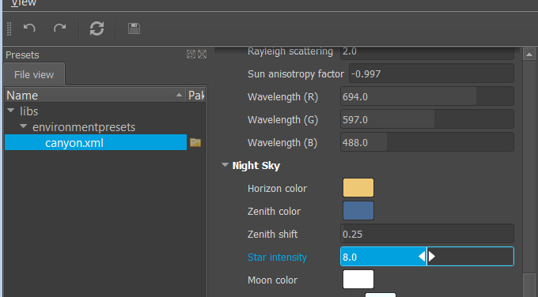
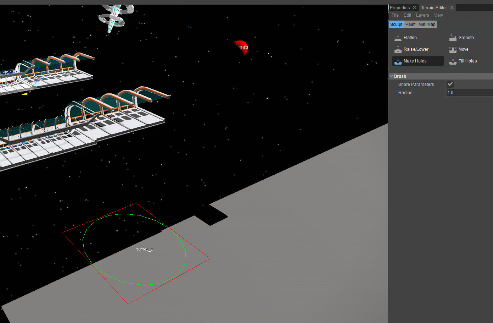
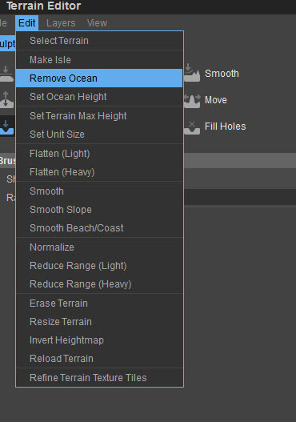
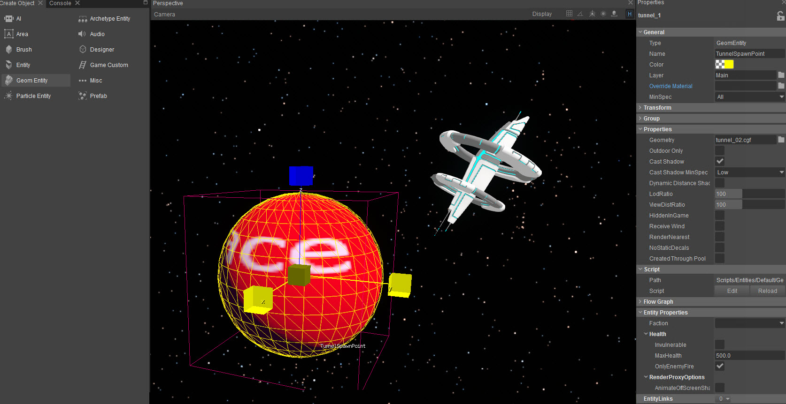
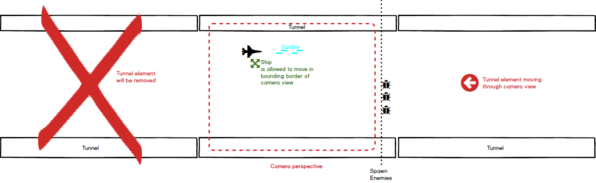
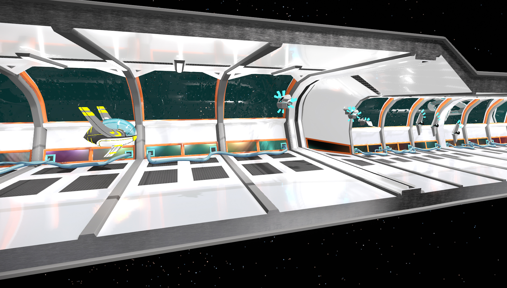
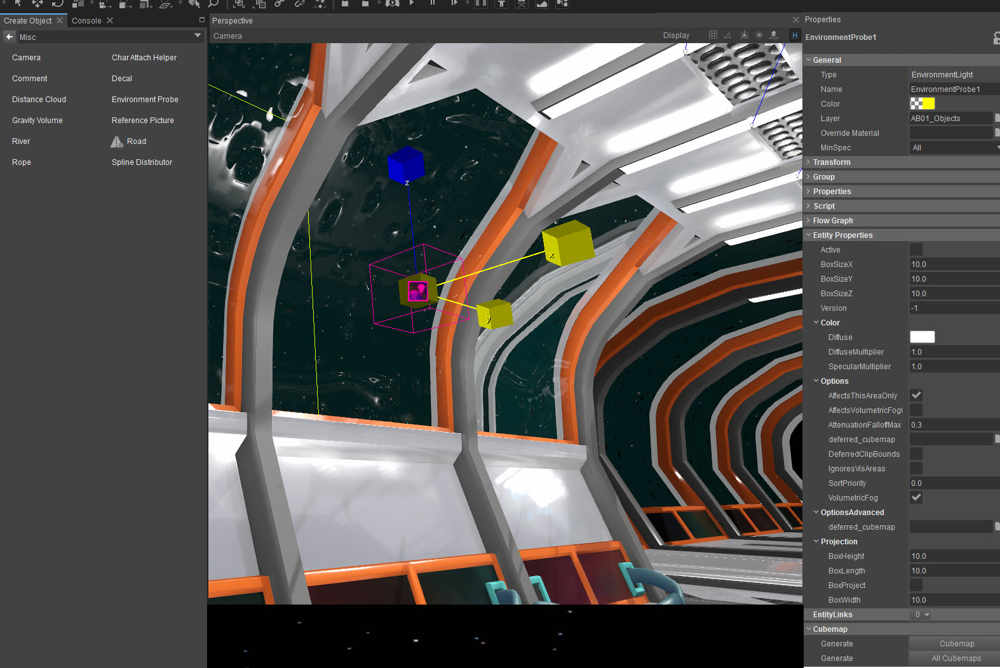

The Canyon level which is used in the Sydewinder application is created purely on the basis of a standard Sandbox Editor Level Creation article, such as:
Since the level creation in this demo is mostly code driven you will only find an assembly of particle effects and the design for the menu background. For further information about level design please check out the Sandbox Level Creation 5.5.2 documentation.
Preparing the Level
The Canyon level is created on a standard map with a size of 1024 x 1024 units. Since the game is situated in a space environment we have set the time of day to 23:59 - this gives a proper star sky as visualized by the Engine. In order to have the stars further exposed we have raised their glowing intensity, this is shown in the following image:
Adjusting the Star intensity. 
Furthermore, we need to fully remove the existing terrain using the Holes Tool.
Using Terrain Editor to fully remove the existing terrain 
Eventually we also have to remove the ocean using the Terrain Editor.
Using Terrain Editor to remove Ocean. 
Level Setup
The Sydewinder game uses helpers which are placed in the level, this is in order to know where the specific entities are supposed to be spawned. As an example a TunnelSpawnPoint entity is placed for the code-driven tunnel building system. Around this helper object the visual level components such as the space station are placed.
Spawning entities in a level. 
The Endless Tunnel
The illusion of flying through an endless tunnel is realized by spawning random tunnel elements and moving them through the player's camera view. Once a piece of the is outside of the visible area it will be removed again.
Creating a tunnel effect. 
Menu Environment
In an empty area of the level a static scene is created, this is used as a background for the game's main menu and high-score menu. The planes on which the 3D UI will be projected are placed in the scene here.
Setting up a menu background environment. 
Lighting Setup
In order to provide a reflective appearance to the level we have placed an Environment Probe in the menu scene and generated a CubeMap on it, this enables reflections in the scene. We have adjusted the Tunnel Material properties to have both CubeMap and screen space reflections at the same time.
The generated Environment Probe is copied and placed next to the TunnelSpawnPoint entity in order to have reflective influence on all in-game entities around the probe.
Placing an environmental probe for lighting setup. 